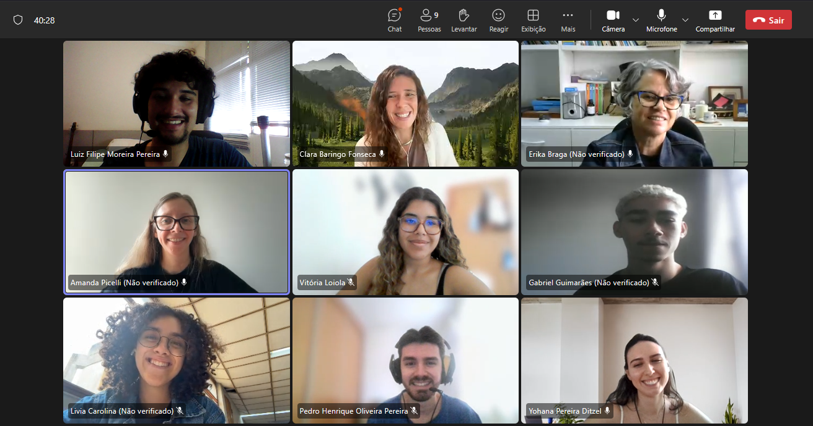

(2).png "Laboratório Malária UFMG")

Photo of the GIEM team in training.
The SIBBR platform
The Interdisciplinary Malaria Studies Group (GIEM) team conducted a technical training this week focused on the use of the SiBBr platform — the Brazilian Biodiversity Information System. The training aimed to standardize data registration, curation, and publication procedures, increasing the transparency and reproducibility of the scientific information produced by the group.
Throughout the meeting, topics such as metadata structure and taxonomy, data quality and cleanliness, georeferencing, usage licensing (Creative Commons), set versioning, integration with biological collections, and citation best practices were addressed. The team also conducted practical submission and validation exercises, simulating the complete workflow from spreadsheet organization to publication in the repository.
According to the GIEM coordination, the full adoption of SiBBr will accelerate the responsible sharing of records, strengthen partnerships with laboratories and conservation institutions, and meet national guidelines for open data on biodiversity. “We are aligning our protocols so that each new dataset produced by the group is born with quality and traceability criteria compatible with SiBBr standards,” the coordination highlighted.
As next steps, GIEM must complete the review of its legacy collections, standardize nomenclatures, and consolidate a schedule for periodic updates. The expectation is that the first revised datasets will be available soon, accompanied by detailed documentation to facilitate reuse by researchers, managers, and policymakers.
With this initiative, GIEM reinforces its commitment to open science, data integrity, and the dissemination of knowledge applied to biodiversity and health.